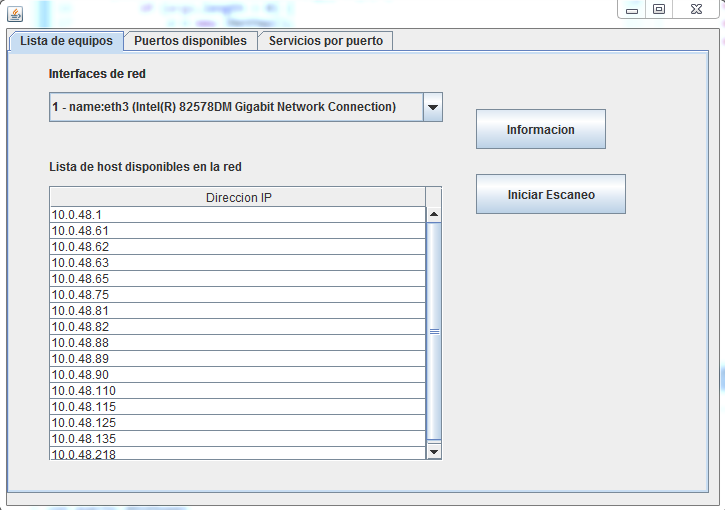

PROYECTO REDES DE COMPUTADORES I
JNetMap: nmap en Java

El objetivo de este proyecto es desarrollar un software muy similar al NMAP en algunas de sus funcionalidades el cual tendran un alcance limitado. Con la construcción de esta aplicación podrán comprender el funcionamiento de los protocolos de la capas bajas del Modelo TCP/IP y además se logrará establecer una conexión entre las utilidades que los lenguajes de programación prestan junto con los conceptos de redes de computadores.
Cuando la aplicación se ejecuta con entorno grafico podemos visualizar tres opciones, la primera pestaña con nombre lista de equipo, la segunda puertos disponibles y la tercera servicios por puerto.
1. "Lista de equipos": en esta pestaña podemos encontrar como primera opcion una lista con todas las interfaces de red disponibles en el equipo, el usuario seguidamente puede seleccionar una de estas interfaces y pulsando en la opcion informacion se mostrará: el nombre de la interfaz, la direccion ip del equipo y la mascara de red. Cuando el usuario ha seleccionado la interfaz de red deseada, puede pulsar sobre la opcion iniciar escaneo el cual procede a realizar ping a todas las direcciones ip del segmento de red e identifica los host activos, para luego mostrar sus direcciones ip en la tabla de la seccion inferior de la vista.
2. "Puertos disponibles": en esta pesta;a podremos consultar los puertos que tiene disponible un host. En esta vista encontramos como primera opcion un campo de texto localidado en la seccion superior, en este campo podremos ingresar un direccion ip asociada a un host a la que deseamos consultar los puertos que tiene disponibles, una vez ingresada la direccion ip para proceder con el escaneo de puertos, el usuario debe pulsar el boton ubicado al lado derecho del campo de texto, cuando este boton es pulsado el sistema primeramente verifica si esta direccion ip corresponde a un host que está en el segmento de red y que ésta activo, si es así procede a verificar cada uno de sus puertos, empezando desde el 1 hasta el 65535 y luego lista en la tabla de la seccion inferior todos los puertos activos.
Cuando la aplicación se ejecuta mediante líneas de comando, podemos ejecutar diferentes comandos para acceder a las funcionalidades de la aplicación:
1. Para listar las interfaces de red que posee el equipo, se ejecuta el comando "-if". Una vez ejecutado, aparecerán las diferentes interfaces de red del equipo en el que se ejecuta la aplicación.
2. Para listar los host disponibles en una red, se ejecuta el comando "-ls", adicionalmente, podemos agregar el ID de la NIC conectada a la red que se desea analizar. El ID se muestra una vez ejecutado el comando "-if". Una vez ejecutado, se listarán todos los host que respondan a un mensaje ICMP lanzado desde el host sobre el cual se ejecuta la aplicación.
3. Para listar los puertos disponibles que tiene un host, se ejecuta el comando "-pl", seguido de la IP del host al que se desea escanear los puertos. También se puede elegir la NIC colocando seguidamente el ID de la misma. Una vez ejecutado el comando, aparecerá una lista con todos los puertos disponibles del host a analizar.
4. Por último, también se puede acceder a una guía de usuario ejecutando el comando "-h", esto listará una lista con todos los comandos disponibles en la aplicación.